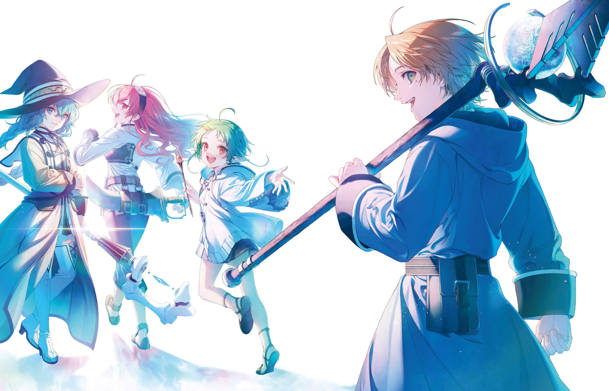

關於本站與我
我是林佾則，目前就讀於國立中山大學資訊工程學系二年級。
本網站於 2020 年 12 月初試啼聲，那時十分感謝資訊社學長的指導，讓我得以搭建出這專屬於我的數位空間。雖然當時僅具雛形，卻也成為我記錄學習歷程的珍貴起點。
升上大二後，我不僅在程式語言與資訊科學上持續精進，更重新拾起閱讀的習慣，廣泛涉獵文學、藝術、音樂與咖啡等多元領域。基於對美學與技術的雙重追求，我於近期著手將網站進行全方位的翻新與優化。未來，這裡將持續蛻變為我記錄技術筆記與生活思想的靜謐天地，歡迎您的駐足與閱覽。
